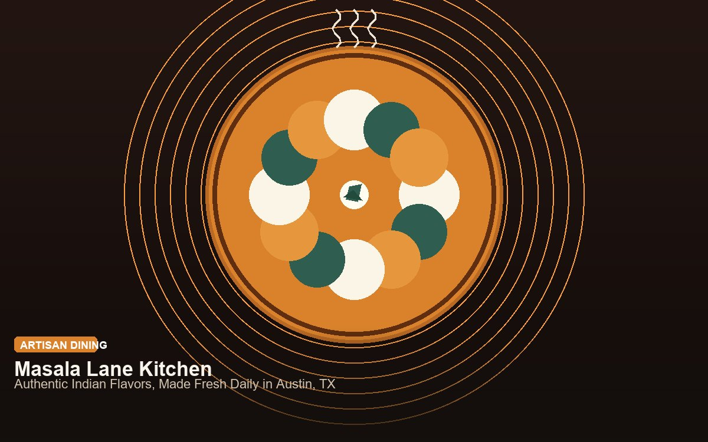
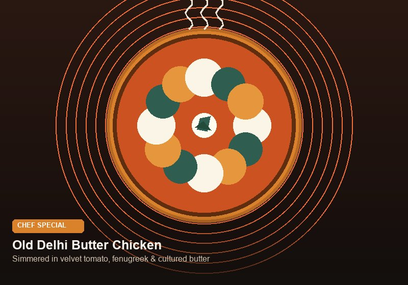
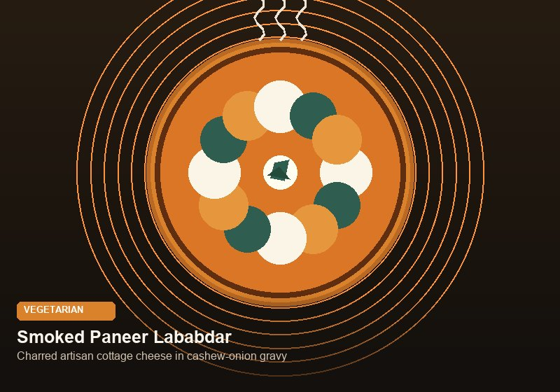
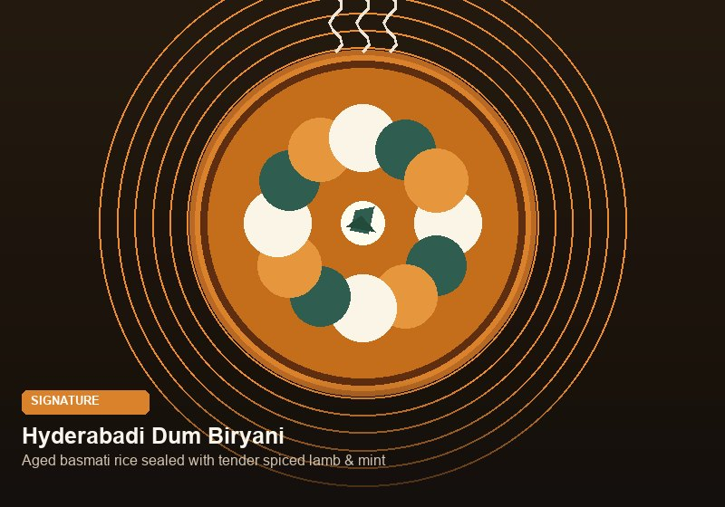
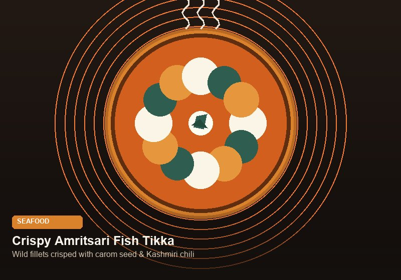
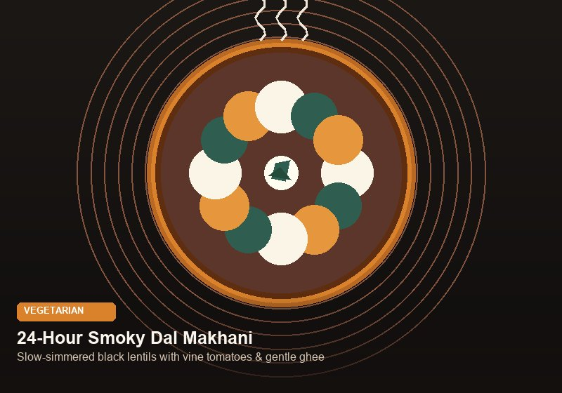
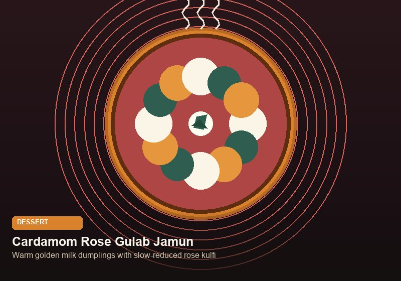

Family recipes
Passed down through three generations from Amritsar to Mumbai, each heirloom recipe is slow-simmered to extract deep, nuanced warmth.
Slow-cooked heritage curries, clay-oven tandoor specialties, and freshly stone-ground spices in the heart of Austin.

100% Scratch-Cooked
Whole spices roasted every morning
We honor centuries-old Indian culinary craftsmanship with zero shortcuts, bringing bold honest warmth to every table.
Passed down through three generations from Amritsar to Mumbai, each heirloom recipe is slow-simmered to extract deep, nuanced warmth.
We never use pre-packaged powder mixes. Green cardamom, star anise, cumin, and coriander are hand-toasted and stone-ground in our kitchen every dawn.
Over half our menu celebrates vibrant plant-forward cooking, prepared in dedicated cookware with certified organic lentils, fresh produce, and house-made paneer.
Our most celebrated dishes, perfected over decades and roasted over glowing mesquite tandoor coals.

Guest FavoriteSlow-simmered tender chicken in a velvety smoked tomato, fenugreek, and cultured butter reduction.

Chef's PrideCharred artisan cottage cheese folded into a creamy spiced onion, cashew, and coriander gravy.

Slow Dum CookedFragrant aged basmati rice and marinated spiced lamb sealed and slow-cooked in a dough-sealed clay pot.

Tandoor SpecialWild-caught fish fillets coated in carom seed, chickpea flour, and Kashmiri chili, pan-crisped to golden perfection.

Heritage RecipeBlack lentils and red kidney beans slow-simmered for 24 hours with vine-ripened tomatoes and gentle ghee.

House DessertWarm golden milk dumplings infused with green cardamom paired with dense, slow-reduced pistachio and rosewater kulfi.
We are honored to welcome neighbors, travelers, and food lovers to our dining room every evening.
“The Butter Chicken and garlic naan took me straight back to my grandmother's kitchen in Punjab. Hands down the most authentic, deeply layered Indian dining in Austin.”
South Congress Local • Verified Diner
“Incredible vegan variety! The roasted baingan bharta and lentil dal were bursting with complex, fresh-ground spice layers without feeling heavy or oily. A true culinary gem.”
Austin Food Critic • Verified Diner
“We hosted our anniversary dinner here. The service was heartfelt, the tandoor prawns were extraordinary, and the amber lighting made it so intimate. We will be regulars for life.”
Zilker Residents • Verified Diner
Join us on bustling South Congress for cozy indoor dining, shaded patio seating, and takeout pickups.
| Day | Service Hours |
|---|---|
| Monday – Thursday | 11:30 AM – 2:30 PM, 5:00 PM – 9:30 PM |
| Friday | 11:30 AM – 2:30 PM, 5:00 PM – 10:30 PM |
| Saturday | 12:00 PM – 10:30 PM (All Day) |
| Sunday | 12:00 PM – 9:00 PM (All Day) |